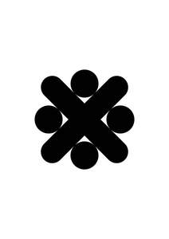

Trade Mark Journal No.2025/050 12 December 2025
UK00004302886 29 November 2025 (14,25,35)

- Class 14
- Jewellery; Necklaces [jewellery]; Brooches [jewellery]; Jewellery brooches; Jewellery, including imitation jewellery and plastic jewellery; Pendants [jewellery]; Bracelets [jewellery]; Brooches [jewellery, jewelry (Am.)]; Ornaments [jewellery]; Amulets being jewellery; Amulets [jewellery]; Pearls [jewellery]; Trinkets [jewellery]; Necklaces [jewellery, jewelry (Am.)]; Jewelry; Fashion jewellery; Lockets [jewellery]; Gold jewellery; Brooches [jewelry]; Jewelry brooches; Brooches being jewelry; Jade [jewellery]; Clasps for jewellery; Charms [jewellery]; Charms for jewellery; Jewellery charms; Enamelled jewellery; Pearls [jewellery, jewelry (Am.)]; Ornaments [jewellery, jewelry (Am.)]; Items of jewellery; Jewellery items; Costume jewellery; Decorative brooches [jewellery]; Rings [jewellery]; Trinkets [jewellery, jewelry (Am.)]; Amulets [jewellery, jewelry (Am.)]; Rings being jewellery; Bracelets [jewellery, jewelry (Am.)]; Pewter jewellery; Jewellery stones; Cloisonné jewellery [jewelry (Am.)]; Wristlets [jewellery]; Cloisonné jewellery; Charms [jewellery, jewelry (Am.)]; Cloisonne jewellery; Lockets [jewellery, jewelry (Am.)]; Chains [jewellery, jewelry (Am.)]; Rings [jewellery, jewelry (Am.)]; Jewellery products; Ivory [jewellery, jewelry (Am.)]; Shoe jewellery; Precious jewellery; Crucifixes as jewellery; Agate as jewellery; Necklaces [jewelry]; Pins [jewellery, jewelry (Am.)]; Jewellery chains; Chains [jewellery]; Ivory jewellery; Medallions [jewellery, jewelry (Am.)]; Jewellery in semi-precious metals; Jewellery chain; Jewellery caskets; Paste jewellery [costume jewelry (Am.)]; Paste jewellery [costume jewelry [Am.]]; Gold plated brooches [jewellery]; Jewellery boxes; Pins being jewellery; Pins [jewellery]; Amber pendants being jewellery; Jewellery for personal adornment; Pendants [jewelry]; Imitation jewellery; Cabochons for making jewellery; Jewellery chain of precious metal for necklaces; Amberoid pendants being jewellery; Body jewellery; Gold thread [jewellery, jewelry (Am.)]; Beads for making jewellery; Personal jewellery; Jewellery for pets; Jewelry (Paste -) [costume jewelry]; Paste jewelry [costume jewelry]; Fake jewellery; Jewellery incorporating diamonds; Jewellery in non-precious metals; Silver thread [jewellery, jewelry (Am.)]; Plastic costume jewellery; Clips of silver [jewellery]; Imitation jewellery ornaments; Hat jewellery; Facial jewellery; Jewellery findings; Crosses [jewellery]; Sterling silver jewellery; Jewellery in the form of beads; Bracelets [jewelry]; Paste jewellery; Jewellery (Paste -); Jewellery articles; Articles of jewellery; Jewellery incorporating pearls; Amulets [jewelry]; Pearls [jewelry]; Jewellery made from gold; Jewellery made from silver; Jewellery chain of precious metal for anklets; Diamond jewelry; Wire of precious metal [jewellery, jewelry (Am.)]; Jewellery containing gold; Lockets [jewelry]; Dress ornaments in the nature of jewellery; Jewellery chain of precious metal for bracelets; Jewellery in precious metals; Jewellery of precious metals; Clasps for jewelry; Jewelry stickpins; Trinkets [jewelry]; Threads of precious metal [jewellery, jewelry (Am.)]; Artificial jewellery; Decorative pins [jewellery]; Jewellery for personal wear; Jewellery fashioned from non-precious metals; Jewellery cases; Charms [jewelry]; Jewelry charms; Charms for jewelry; Jewellery rope chain for necklaces; Body costume jewellery; Jewellery fashioned of semi-precious stones; Jewelry hatpins.
- Class 25
- Clothing; Knitwear [clothing]; Jackets [clothing]; Ready-to-wear clothing; Woolen clothing; Furs [clothing]; Garments for protecting clothing; Clothing layettes; Layettes [clothing]; Linen clothing; Headbands [clothing]; Headbands for clothing; Gloves [clothing]; Gloves as clothing; Clothes; Aprons [clothing]; Maternity clothing; Jerseys [clothing]; Kerchiefs [clothing]; Denims [clothing]; Shorts [clothing]; Cashmere clothing; Capes (clothing); Oilskins [clothing]; Gabardines [clothing]; Leather clothing; Clothing of leather; Leather (Clothing of -); Silk clothing; Collars [clothing]; Parts of clothing, footwear and headgear; Knitted clothing; Veils [clothing]; Windproof clothing; Hoods [clothing]; Corsets [clothing, foundation garments]; Embroidered clothing; Wristbands [clothing]; Bandeaux [clothing]; Belts [clothing]; Belts for clothing; Waterproof clothing; Rainproof clothing; Casual clothing; Visors [clothing]; Jackets being sports clothing; Jackets (Stuff -) [clothing]; Stuff jackets [clothing]; Bottoms [clothing]; Playsuits [clothing]; Ready-made clothing; Clothing for leisure wear; Latex clothing; Infant clothing; Woven clothing; Trunks being clothing; Leisure clothing; Clothing for sports; Sports clothing; Athletic clothing; Drawers [clothing]; Drawers as clothing; Ties [clothing]; Clothing for children; Muffs [clothing]; Bodies [clothing]; Clothing for babies; Tops [clothing]; Clothing for infants; Clothing for cycling; Weatherproof clothing; Fabric belts [clothing]; Pockets for clothing; Water-resistant clothing; Triathlon clothing; Handwarmers [clothing]; Clothing for skiing; Beach clothing; Thermal clothing; Chaps (clothing); Cowls [clothing]; Men's clothing; Fishing clothing; Dance clothing; Mitts [clothing]; Braces for clothing.
- Class 35
- Administration of membership schemes; Administration of a discount program for enabling participants to obtain discounts on goods and services through use of a discount membership card; Administration of frequent flyer programmes that allow members to redeem miles for points or awards offered by other loyalty programmes; Administration of frequent flyer programs that allow members to redeem miles for points or awards offered by other loyalty programs; Administrative loyalty card services; Credit card registration services; Loyalty, incentive and bonus program services; Promoting the goods and services of others by means of a loyalty rewards card scheme; Administrative services relating to credit card registration; Organisation and management of business incentive and loyalty schemes; Administration of loyalty rewards programs featuring trading stamps; Administration of loyalty rewards programs; Administration of loyalty rewards programmes; Organisation and management of customer loyalty programs; Loyalty scheme services; Sales promotion through customer loyalty programs; Management of customer loyalty, incentive or promotional schemes; Organisation, operation and supervision of loyalty and incentive schemes; Organization, operation and supervision of loyalty and incentive schemes; Conducting employee incentive award programs; Sales promotion for others by means of privileged user cards; Promoting the sale of goods and services of others by awarding purchase points for credit card use; Administration of customer loyalty and incentive schemes; Organisation of customer loyalty programs for commercial, promotional or advertising purposes; Administration of loyalty and incentive schemes; Sales promotion for others provided through the distribution and the administration of privileged user cards; Organisation, operation and supervision of customer loyalty schemes; Provision of business data in the form of mailing lists; Organisation, operation and supervision of loyalty schemes and incentive schemes.
Martin headley